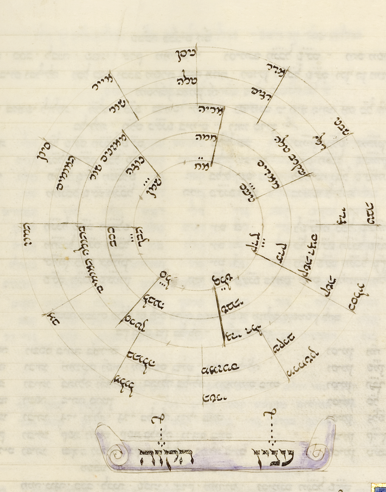
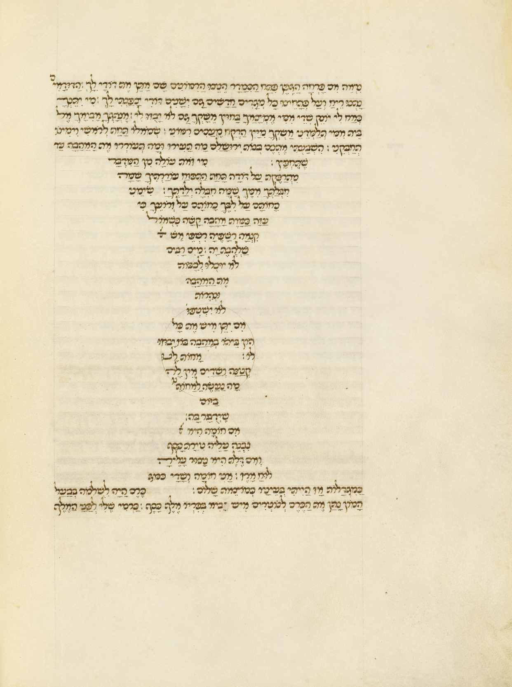

על האותיות
וצורת הכתב
האותיות במחזור נכתבו בכתב חצי קורסיבי איטלקי עגול. הקווים מתעגלים, נפתחים וממשיכים זה אל זה, והכתב כולו נראה כאילו הוא צומח ונע על פני הקלף.
הסופר השתמש בגדלים שונים כדי לבנות היררכיה. אותיות קטנות שימשו להוראות, בינוניות לתפילה, וגדולות לפיוטים ולמילות פתיחה. כאשר נותר חלל ריק, הוא סידר את המילים בתבניות מופשטות והפך את הטקסט לחלק מן העיצוב.

